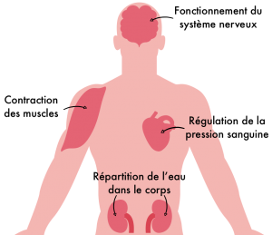
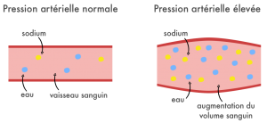
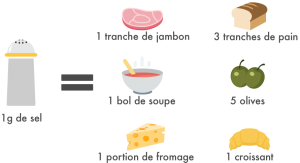

Le sel est indispensable au bon fonctionnement de l’organisme, mais sa consommation en excès favorise le développement de certaines maladies. Aujourd’hui, on en consomme plus du double de nos réels besoins ! Pourquoi un nutriment essentiel est-il devenu l’un des poisons de notre alimentation si difficile à limiter ? Voici notre réponse, rédigée avec l’aide du nutritionniste Anthony Berthou.
Un nutriment essentiel pour le corps
Le sel est un aliment dont le nom scientifique est “chlorure de sodium” : il est composé à 60% de chlorure et à 40% de sodium. Le sodium est donc l’un des minéraux constituants du sel.
Le sodium joue un rôle important pour notre organisme. Il permet le bon fonctionnement du système nerveux, en ouvrant les canaux dans lesquels passent les signaux électriques émis par les neurones. Le sodium a également un rôle sur les cellules musculaires puisqu’il permet de déclencher la contraction des muscles et du coeur.
Le sodium régule aussi l’équilibre hydrique de l’organisme, en faisant fonctionner les reins qui filtrent l’eau du corps et participent à sa répartition. Il permet de retenir l’eau à l’intérieur du corps, et ne de pas l’éliminer totalement par les urines. Il aide enfin à réguler le volume sanguin et donc de la pression artérielle.
Une consommation de 4g de sel par jour suffit pour combler les besoins d’un adulte. Et elle ne doit pas être inférieure à 2g/jour.
Les sportifs peuvent avoir un besoin supérieur. En effet, ils transpirent lors de l’effort et perdent ainsi de l’eau et du sodium par les tissus de la peau. Une carence en sodium peut alors engendrer des crampes après l’effort, de l’épuisement, une incapacité de bien se réhydrater et une diminution des performances. Cela peut être fréquent en cas d’effort de longue durée (> 4h) et de fortes transpirations s’il n’y a pas compensation de la perte en sodium par une boisson adaptée ou s’il y a un excès d’hydratation à base d’eau seule.
Un danger pour la santé consommé en excès
De nos jours, nous mangeons excessivement salé. Nous consommons en moyenne 8 à 10g/jour de sel, ce qui est bien trop élevé.
L’excès de sel favorise l’hypertension artérielle. Lorsqu’on consomme du sel, cela engendre un phénomène d’appel d’eau, un peu comme lorsque vous faites dégorger un concombre en le saupoudrant de sel : l’eau est attirée par le sel. Ainsi lorsqu’il est consommé en excès, le sel peut modifier les échanges d’eau dans l’organisme. Les vaisseaux sanguins deviennent trop chargés en eau, le volume sanguin et la pression sanguine vont donc augmenter : c’est le début de l’hypertension artérielle. L’hypertension elle-même peut favoriser à terme certaines maladies cardiaques, voire les accidents vasculaires cérébraux (AVC et anévrisme).

La consommation de sel et d’aliments salés augmente aussi le risque de cancer et d’ulcère de l’estomac. En effet, le sel contribue à attaquer et endommager la paroi de l’estomac pouvant favoriser l’infection d’une bactérie appelée Hélicobacter pylori. Elle est à l’origine d’une augmentation des risques d’ulcère et de cancer de l’estomac. Par ailleurs, le sel nitrité, qui est utilisé comme conservateur dans de nombreuses charcuteries, est un composant reconnu comme favorisant les risques de cancer colorectal.
Enfin, la surconsommation de sel peut augmenter les carences en calcium. En effet, l’excès de sel de table (chlorure de sodium) contribue à augmenter l’acidité du corps. Lorsque l’alimentation est équilibrée, l’acidité est compensée par des composés dit “alcalinisant” présent en abondance dans les fruits et légumes. Mais, si l’alimentation est déséquilibrée et que l’organisme reçoit davantage de charges acides qu’il ne peut en éliminer, il va devoir puiser dans ses propres réserves de minéraux alcalins (magnésium, potassium, etc.). Lorsque cette acidité est importante et chronique, le corps va devoir aller jusqu’à puiser dans ses réserves de sels de calcium qui se trouvent dans les os. Le calcium libre est ensuite éliminé via les urines, ce qui peut conduire à une fragilisation des os et favoriser les fractures à long terme. C’est particulièrement problématique chez les adolescents dont le capital osseux est en formation et chez les femmes après la ménopause puisque cette carence augmente les risques d’ostéoporose.
Comment limiter sa consommation de sel ?
- Limitez les aliments riches en sel : les plats préparés, chips, charcuteries, pizzas, sauces, fromages, etc… sont riches en sel.

- Trouvez des alternatives : ail, oignon, thym, ciboulette, basilic, citron, poivre, curry, paprika et autres épices sont autant d’alternatives qui donneront du goût à vos plats et permettront de varier les saveurs.
- Changez vos habitudes : goûter avant de saler, ne pas saler l’eau de cuisson, retirer la salière de la table, sont des petits réflexes simples et efficaces qui vous permettront de réduire votre consommation de sel.
- Évitez de développer le goût du sel : la préférence pour le salé n’est pas innée, elle s’apprend. Limitez donc l’ajout de sel dans les repas de vos enfants. Ils prendront ainsi directement de bonnes habitudes qu’ils conserveront à l’âge adulte.
Bien choisir son sel de table
Le sel est puisé dans les ressources de la mer ou de la terre. Le sel de mer est extrait de manière naturelle, écologique et durable par l’évaporation de l’eau de mer dans les bassins de sel. Le sel de terre est extrait de couches de sel souterraines par des processus très énergivores qui dégradent les sous-sols. La production de sel de terre a donc une plus grande empreinte carbone et contribue bien davantage à la dégradation de l’environnement.
Le sel de mer et le sel de terre peuvent tous deux être raffinés. Le sel raffiné est traité chimiquement afin de le blanchir, de le rendre saupoudrable et d’optimiser sa conservation. Malheureusement, les minéraux comme le magnésium ainsi que les oligo-éléments qui composent le sel sont éliminés au cours de ces processus : seul subsiste le sodium. Par ailleurs, des antiagglomérants sont ajoutés dans le sel raffiné : E535 (ferrocyanure de sodium), E536 (ferrocyanure de potassium), ou encore E538 (ferrocyanure de calcium). Les antiagglomérants sont des additifs alimentaires seulement autorisés en faible dose pour le sel. Ils présentent un risque potentiel d’allergies et de contamination de métaux lourds.
A l’inverse, le sel non raffiné est le sel sortant directement de la mer ou de la terre, sans transformation ni traitement chimique. Il est généralement grisâtre et contient du sodium, du magnésium et d’autres minéraux.
Le sel est à limiter au maximum, mais privilégiez le sel marin non raffiné et vérifiez que le seul ingrédient est bien du sel. Le sel de Guérande, de Noirmoutier, de l’Ile-de-Ré, de Camargue et le sel de la Mer Morte répondent généralement à ces critères.
Le sel “pauvre en sodium”, enrichi en potassium ou en herbes aromatiques est une bonne alternative à la surconsommation de sodium. Mais il faut y surveiller l’ajout d’additifs ! Privilégiez le potassium organique (citrate de potassium) au chlorure de potassium car ce dernier contribue à acidifier l’organisme. Vous pouvez par exemple opter pour le produit K-sel de la marque Pileje (proposition faite en toute indépendance, sur recommandation d’Anthony Berthou). Le gomasio, mélange de graines de sésame broyées et de sel marin, est une autre alternative intéressante.

Bonjour,
J’ ai à la maison deux tablettes de chocolat parfaitement équivalentes : une de nestle qui contient 0.01g de sel et une de lindt qui contient 0.2g de sel. Quel est l intérêt de mettre 20 fois plus de sel? Donner une forme de soif que l on etancherai en prenant un deuxième carreau?
Faites vous des études comparatives sur des gammes de produit similaire, en apparence…
Merci pour ces infos… 😊
Bonjour à Blomy , je vais faire en de tenir compte de votre avis. Merci à vous et bonne continuation. Faite attention à vous.
Bonjour à toute l’équipe 😊 blomy
J’ai voulue renoncé au sel pour quelque temps pour des raisons de santé du coup j’ai trouvé du sel -70% du sodium de la marque La Baleine Verte chez Naturalia.
les ingrédients : minéraux de mer (60%) ( calcium, magnésium ), sel de mer (30%), herbes de Provence (10%) ( thym, sauge, sarriette, estragon ).
j’aimerai avoir votre avis sachant que le scan de blomy m’a donné : bon 50
Merciii bcp 👍👍👍👍👍 et bonne continuation
De très bons conseils quand on ne sait plus que mettre dans son assiette.
Merci pour tout vos bon et naturel conseil cela fait du bien d’être aidet par des personnes comme vous qui aime le bon et naturel produits et nous informe merci beaucoup bonne continuation 🙋♀️👍
Vous êtes trop forts les Yukistes.
Chapeau. Ça fait du bien de voir des jeunes comme vous, dynamiques et qui utilisent leur intelligence pour pousser le monde dans la bonne direction. Soyez puissants !
Merci !
J apprend beaucoup de choses sur les produits de consomation, je vous en remercie. Continuez à bien nous renseigner sur les produits que l on connait pas bien et que l on abuse . Merci à vous
Super, vos infos ! Bien documentées et sérieuses. Merci
Merci pour les commentaires
Greffé rénal donc avec peu de sel que me conseillez vous merci bcp
Bonsoir ,est ce que le sel raffiné ne pas Iodé ?
Simple et facile à comprendre. Dommage que beaucoup de personnes ne font aucune différence. Merci pour vos bons conseils.
Très intéressant
Bonjour la famille Blomy. J’ai trouvé des sels minéraux de mer de la marque La Baleine mais je ne réussis pas à trouver sa composition exacte. Pouvez vous me renseigner?
Greff
Vous êtes génial c’est super. Vous avez créé un site intelligent-bravo les jeunes-merci
Sel La baleine regardez attentivement la composition.
Pas de scan possible pour un résultat ??👋